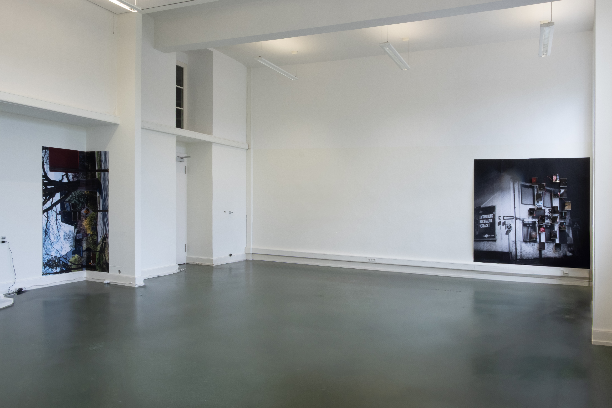
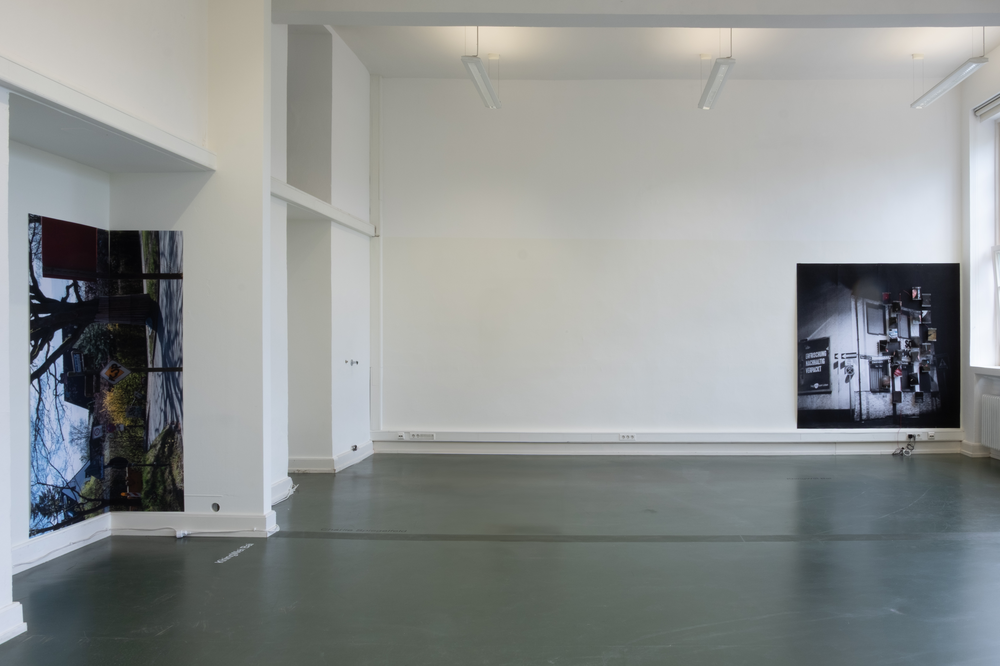
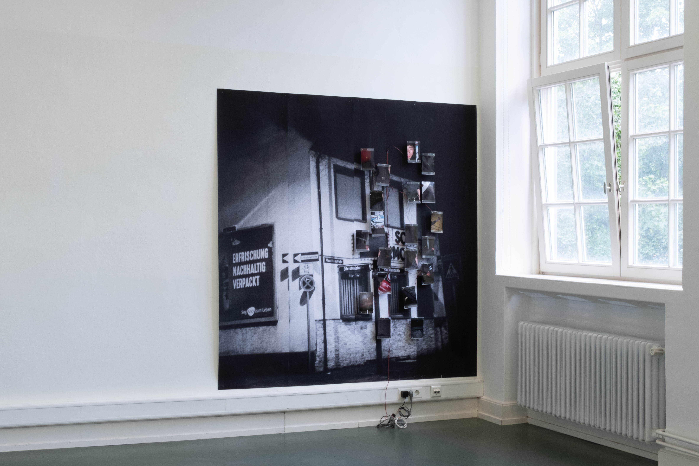
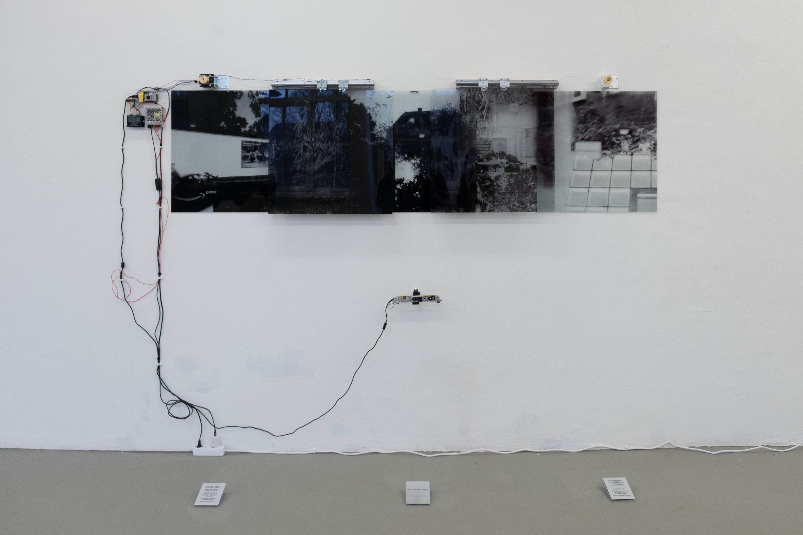
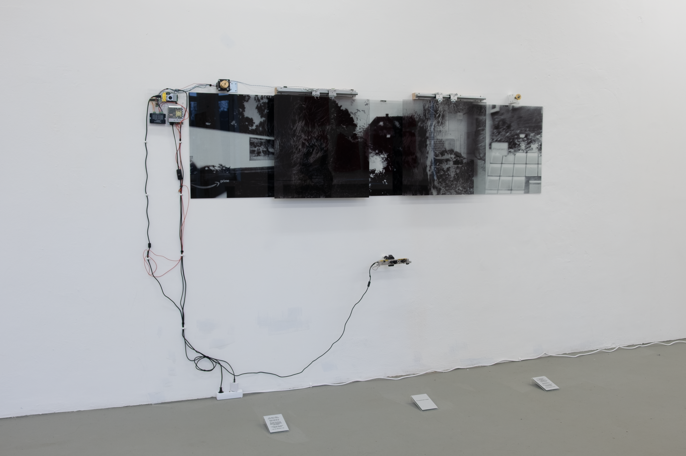
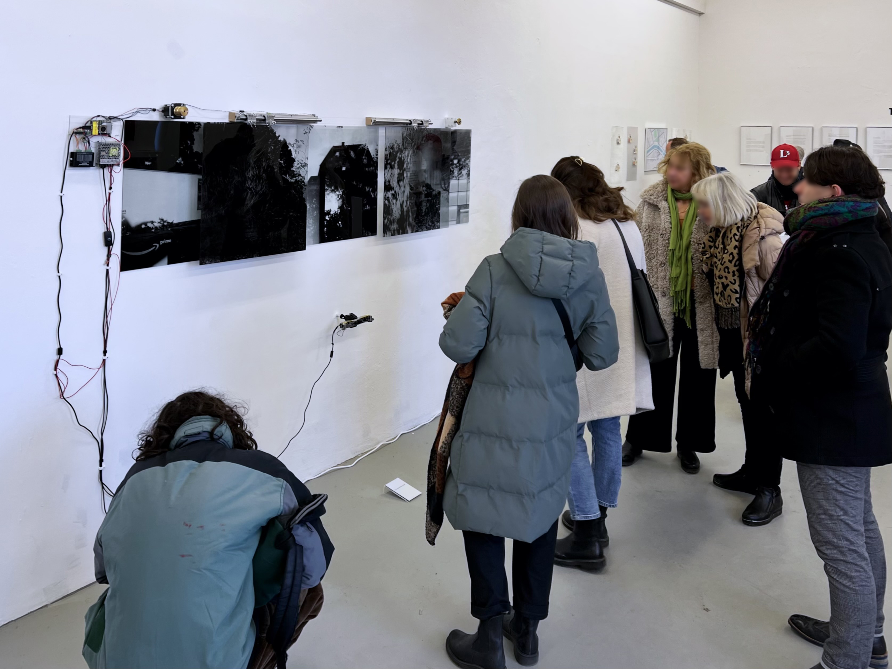
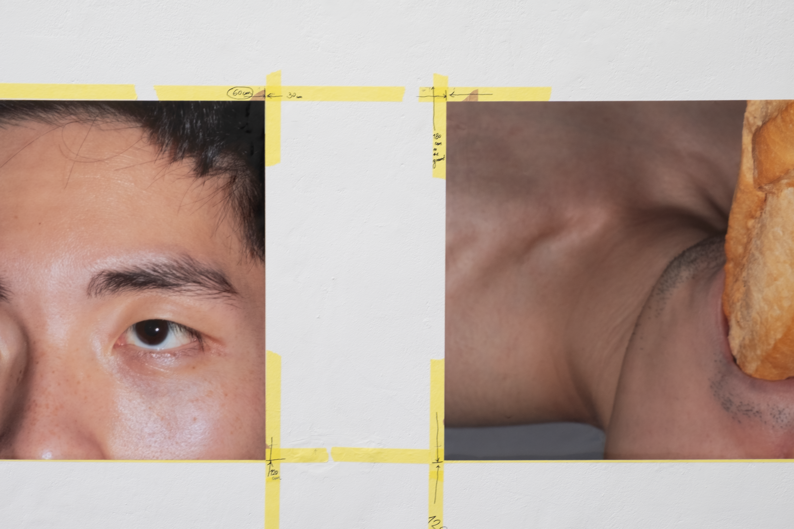

Destinesia
photo print 136×200cm, photo print 200×200cm, motion sensor, vibration motors

Destinesia: An instance of forgetting the purpose of a journey upon reaching the destination.
This work Destinesia explores the fragmented experience of a non-white body navigating through spaces dominated by white gazes. It reflects on the feeling of being dissected, objectified, and simplified, which is reduced to fragments rather than recognized as a full subject. Through fragmented images, delayed reaction, and spatial dislocation, the work tries to resist direct narrative, instead creating a space where reactions arise before understanding. Audience participation becomes part of the work, as perception, interpretation, and attention complete the experience, making the replication of a living experience into the exhibition space. By separating movement from response, the work creates a gap—both sensory and conceptual—that provokes thought and discomfort. This work tries to capture a state of hyper-vigilance, of being seen yet remaining unseen, where the destination becomes secondary to the process of navigating perception itself. It is a persistent act of resistance, unfolding through presence, absence, and delay.




If in a desired land, a stranger
Acrylic Plates, Motion structure, Depth camera
/
If in a desired land, a stranger
/
Your beautiful body is everywhere, flying through the sky of mythology, crossing breathtaking scenes of movies. Every art piece is a glorification of that. Your body is represented in a million times, in a million shapes. You are, therefore you are.
/
My name is taken, and my body is absent. Thinner than the air, lighter than the gas. My body becomes an imaginary playground, where any manipulation could happen. Looking into the mirror, I identify nothing. I am not, therefore I am.
/
This work If in a desired land, a stranger tries to contain multiple layers that all relate to a foreign individual's existence. This is not just to represent the gaze from non-existence but also to try to create a shifting of gaze between audiences and artwork, which will add other meanings and interpretations depending on the status of this viewer. The poem on the mirrors, which are placed on the ground, describes a certain mindset within a Western-constructed world; however, it leaves space for any possible interpretation. The hiding and revealing of the German street shot panorama, created by the movement of the viewer getting closer when they want to read the poem, provides a personal related experience.




I don’t mean it bad, but Asian men look feminine
Digital-Print Photographs
The work I don’t mean it bad, but Asian men look feminine explores the racialized and gendered perceptions of Asian masculinity in Western society. Through a series of three photographs, I examine the intersection of power, silence, and identity. A baguette—an emblem of Western cultural dominance—becomes a symbolic force of imposed masculinity, shaping how individuals are perceived and positioned.
The work questions why femininity is seen as shameful for an Asian man and challenges the societal frameworks that define and constrain identity. By inviting viewers into a constructed yet deeply personal narrative, Khing reveals the complexities of self-perception and external expectation, opening space for reflection on race, gender, and power.

Du bist ein Traummann (Wall)
Content to be added.
Dripping Island
Content to be added.
Displaced Cicada
Content to be added.
The Phases of My Moon
Content to be added.
The Other Side of The Moon
Content to be added.
Du bist ein Traummann (Book)
Content to be added.